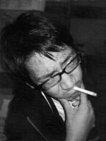
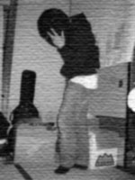

|
＊実行委員会＊ 実行委員会は、学祭をより良いものにするために活動しています。 地味な雑用がたくさんあります 華々しい仕事もたまにはあります 今日も五研(注1)はパソコンに向かう者作業する者でいっぱいです。 寧ろ住んでいる人もいます。 学祭当日、何か分からないことがございましたらお気軽にインフォメーションテント、もしくはこのような(注2)風貌の人にお尋ねください。 (注1) 五研 ＝ 厚生棟第五研修室の略。 実行委員のHOME。実行のことも指す。 (注2) このパーカーが目印！！ ＊＊＊＊＊ ＊＊＊＊＊ ここで密かに紹介 委員長の佐々木くんです 学祭の総指揮として日々動き回っています。  副委員長の片割れです 実行委員のお世話のほか さまざまなことに気を配っています  副委員長のスペアです 片割れを影で支えているようです |